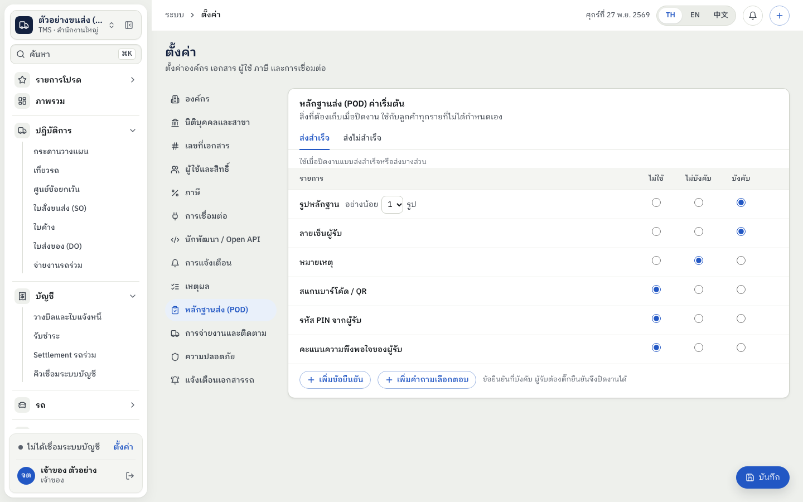

หลักฐานการส่ง (POD)
เมื่อ POD ครบ ใบส่งของจะเปลี่ยนเป็น รอวางบิล พร้อมนำไปออกใบแจ้งหนี้
บันทึก POD บนเว็บ
- เปิดเที่ยว แท็บ เอกสารแนบ หรือเปิดใบส่งของ แท็บ หลักฐานส่ง
- กด อัปโหลดรูป และ เก็บลายเซ็นผู้รับ → ใช้ลายเซ็นนี้ กรอก "ชื่อผู้รับ" "ความสัมพันธ์" (และ "น้ำหนักชั่ง (กก.)" ถ้ามี)
- กด บันทึกหลักฐานส่ง — สถานะแสดงเป็น ยังไม่มี POD / POD ไม่ครบ / POD ครบ
- ผู้รับเหมาส่ง POD จากลิงก์ได้เอง — ดู ลิงก์รถร่วม
การแก้ POD ภายหลังต้องระบุเหตุผล และเมื่อวางบิลแล้วจะแก้หลักฐานส่งไม่ได้
ตั้งรายการ POD ที่บังคับ
ตั้งค่า → ตั้งค่าระบบ → หลักฐานส่ง (POD) ตั้งชุดรายการสำหรับ "ส่งสำเร็จ" และ "ส่งไม่สำเร็จ" แต่ละรายการเลือก ไม่ใช้ / ไม่บังคับ / บังคับ (เช่น รูปหลักฐาน ลายเซ็นผู้รับ สแกนบาร์โค้ด / QR รหัส PIN จากผู้รับ) · ลูกค้ารายใดต้องการต่างจากค่าเริ่มต้น ตั้งที่หน้าลูกค้า "กำหนดเองสำหรับลูกค้านี้"

จำนวนที่ส่งจริงและตีกลับ
- ส่งน้อยกว่าแผน: กรอก "จำนวนที่ส่งจริง" และเลือกเหตุผลพร้อมแนบหลักฐาน
- ตีกลับบางส่วน: เลือก ส่งซ้ำ (สร้างใบส่งของใหม่รอจัดรถ) หรือ คืนคลัง แล้วกด บันทึกตีกลับ